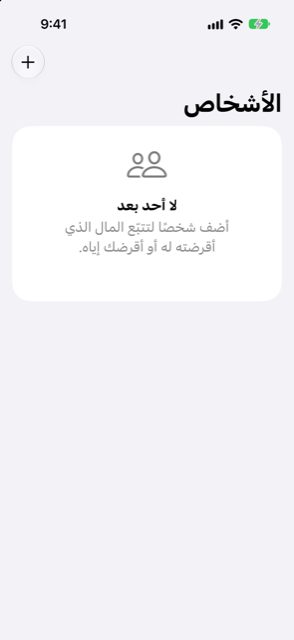

الدليل › الحسابات والبطاقات والأشخاص
الأشخاص: ما أقرضته وما اقترضته
المال الذي أقرضته أو عليك، شخصًا شخصًا.
يحتفظ قسم الأشخاص برصيد مع كل شخص تُقرضه مالًا أو تقترض منه. فالإقراض ليس إنفاقًا ولا السداد دخلًا: المال ينتقل بين حسابك والشخص، فلا تتأثر أرقام إنفاقك ودخلك.

متى تستخدمه
- عندما تُقرض شخصًا مالًا وتريد أن تتذكر من يُطالب بمن وبكم.
- عندما تقترض من أحد أفراد عائلتك أو من صديق وتريد أن ترى ما ما زلت مدينًا به.
- عندما تريد إبقاء السدادات خارج أرقام إنفاقك ودخلك، بينما يبقى المال يدخل حساباتك ويخرج منها.
خطوة بخطوة
- افتح الخطة، ثم الأشخاص: ما أقرضته وما اقترضته، وانقر إضافة.
- اكتب اسم الشخص في المربع المعنون شخص جديد وانقر إضافة.
- افتح الشخص من القائمة.
- تحت تسجيل، اختر ما حدث: أقرضت، أو اقترضت، أو سددوا لي، أو سددت لهم.
- أدخل المبلغ والحساب الذي انتقل عبره المال والتاريخ، ثم انقر حفظ.
يُظهر رصيد الشخص من يُطالب بمن: فالموجب يعني أنه يدين لك، والسالب يعني أنك تدين له. وعندما لا يوجد دين في أي اتجاه، يقول تمت التسوية بالكامل.
من الجيد أن تعرف
- يمكنك أيضًا إضافة شخص من الحسابات: انقر زر الزائد، ثم إضافة شخص.
- ويظهر الأشخاص أيضًا في صفحة الحسابات، تحت الأشخاص، مع كل منهم من يُطالب بمن وبكم.
- لا يُحتسب الإقراض ولا السداد أبدًا إنفاقًا أو دخلًا. ينتقل المال بين حسابك والشخص، ولا يذهب إلى مكان آخر.
- قد يكون للشخص رصيد بأكثر من عملة. يُحفظ كل رصيد بعملته؛ وتعرض القائمة سطرًا لكل منها.
- لإضافة دين موجود مسبقًا عند البدء، استخدم دليل الإعداد. في خطوة القروض والديون، انقر إضافة، ثم مال مع شخص.
- إن كان هناك رصيد لن يُسدَّد، افتح الشخص واستخدم الزر في أسفل الصفحة: اشطب مالًا مدينًا لك لن يُسدد، أو علِّم ما عليك أنه سُامح فيه.
- السداد الذي تسجّله يحرك مالًا حقيقيًا في اليوم الذي تدخله فيه. فهو في أرصدة حساباتك من ذلك اليوم، ويبدأ التوقعات من تلك الأرصدة.
ذات صلة
هل هناك شيء غير واضح أو ناقص؟ اكتب إلى support@raveniq.ai واذكر الصفحة.